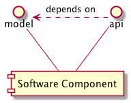
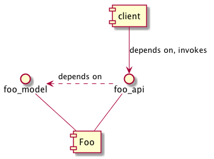
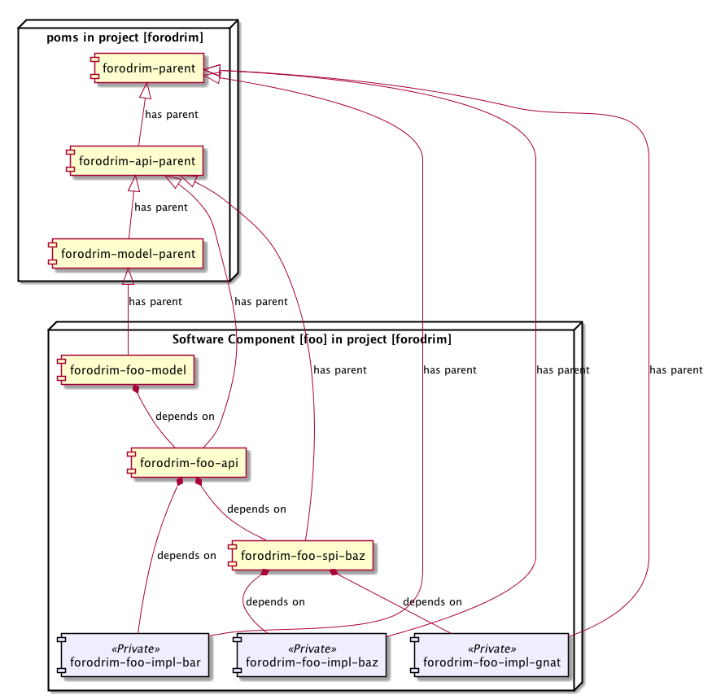

Software components
Component-based software engineering defines a software component as:
An individual software component is a software package, a web service, a web resource, or a module that encapsulates a set of related functions (or data).
While this description is true, it is far too generic to use directly in a project. The Nazgul project structure therefore defines a software component in a more specific way.
Nazgul Software Components (“NSC”)
A Nazgul Software Component is implemented as a set of collaborating Maven projects, each with a separate role/purpose. The overall purpose of the software component is to reduce dependency tanglements and to improve architecture/usability by design.
A NSC has a set of publicly available projects which act as the interface of the NSC - normally an API project and a model project if the NSC has entities. The as illustrated in the first row in the table below. The NSC is termed “domain component” if both model and API projects exist, and a “library component” if only the API project exist for the NSC in question. As illustrated in the figure below, the API project may hold a dependency to the model project - but not vice versa.
| Description | Image |
|---|---|
| NSC publicly available projects. Note that the API project may hold a dependency to the model project - but not vice versa. |  |
| Client calling a method within an NSC API project. Note that the client only holds a dependency to the foo_api project (and receives a transient dependency to the foo_model). The client project may not depend on private/internal NSC Foo projects; instead the implementation projects should be injected into applications (both JEE application projects, such as WARs or EARs, and standalone JSE application JARs). |  |
Client projects using the code defined within an NSC should depend only on the model and API projects. As illustrated by the figure in the second row of the table above, a client component invokes on the Foo component by importing a dependency on its API project (i.e. foo_api project). Since the foo_api project has a transitive dependency on the foo_model, all entities defined within the foo_model are also immediately availabile to the client project without a separate dependency import.
Maven projects of Nazgul project Software Components
The NSC realization defines all permissible maven project types as part of the Nazgul Tools: Codestyle project. Please refer to the documentation of the Codestyle project for full details. Being OSGi-compliant by design, some project types (notably Model, API and SPI project types) export all packages as public, whereas the implementation projects hide all their classes (i.e. having completely private packages).
In addition to the traditional model/api/spi/impl project structure, an important project for developers is the example project intended to show the uses of the NSC. Example projects function as copy/paste sources, implying that developers will need only copy code from test cases within the example project into their projects to use the NSC in question. Frequently, developers will only need to investigate the API project as a reference. This structure and philosophy has proven to save considerable amounts of time when developers learn how an NSC works.
| Description | Image |
|---|---|
| Structure of an example Nazgul Software Component ("NSC"), including permitted dependencies between its projects |  |
| Structure of the same example Nazgul Software Component ("NSC"), including permitted dependencies between its projects and with POM parent relationships marked. The example project has been omitted in this illustration for brevity. |  |
POM structures: parents and dependencies
While the images above may seem laden with many dependencies, they are accurate and illustrate the somewhat simple relations between project POM files. A parent relationship between a POM (and its parent POM) is shown below:
...
<parent>
<groupId>se.jguru.nazgul.core.poms.core-api-parent</groupId>
<artifactId>nazgul-core-api-parent</artifactId>
<version>1.5.2-SNAPSHOT</version>
<relativePath>../../../poms/core-api-parent</relativePath>
</parent>
<groupId>se.jguru.nazgul.core.quickstart.analyzer.api</groupId>
<artifactId>nazgul-core-analyzer-api</artifactId>
...
In this case, the nazgul-core-analyzer-api project defines the nazgul-core-api-parent pom as its parent. Dependencies between POMs are marked with solid diamond-head arrows in the UML diagrams above, and imply that one POM defines a dependency from its project’s code to another artifact. Three such dependencies are defined in the code snippet below (and the versions of the respective dependencies are defined within the parent of the pom illustrated).
<!-- +=============================================== -->
<!-- | Section 2: Dependency (management) settings -->
<!-- +=============================================== -->
<dependencies>
<dependency>
<groupId>org.apache.commons</groupId>
<artifactId>commons-lang3</artifactId>
</dependency>
<dependency>
<groupId>junit</groupId>
<artifactId>junit</artifactId>
<scope>test</scope>
</dependency>
<dependency>
<groupId>ch.qos.logback</groupId>
<artifactId>logback-classic</artifactId>
<scope>test</scope>
</dependency>
</dependencies>